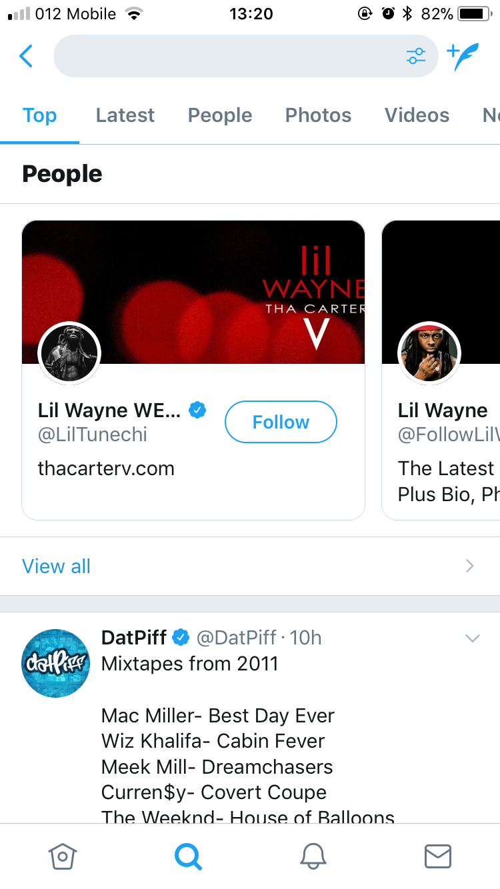
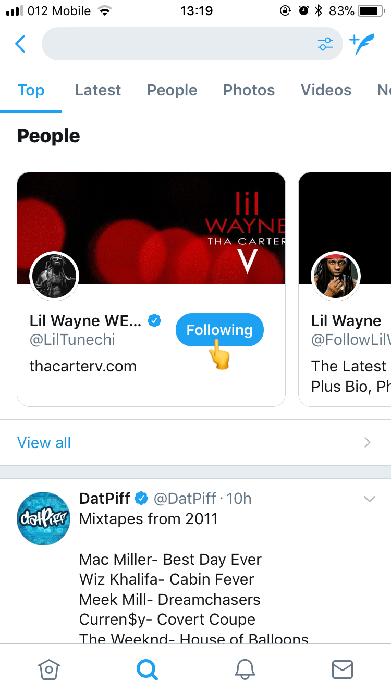
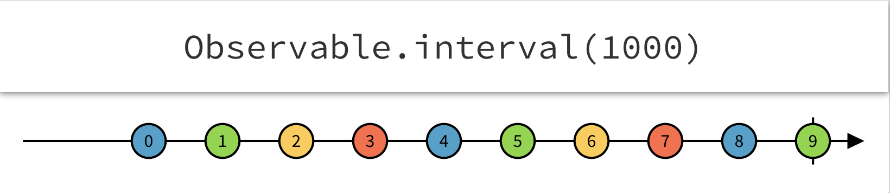
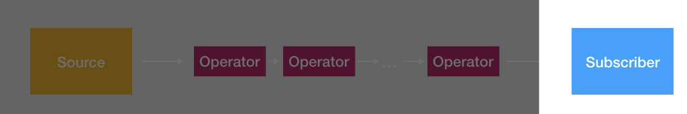

Follow
Follow
Get update for each tweet

Everything is a stream
 DOM events (click, resize, etc...)
DOM events (click, resize, etc...)
 Network
calls (HTTP, Websocket, etc...)
Network
calls (HTTP, Websocket, etc...)
 Application
state
Application
state
 RxJS
RxJS
Produce - Transform - Consume
Initial concepts
Observable - Some future stream of values or eventsObserver - A callback/callbacks that listens to events by obserableSubscription - The execution itself (a value returned from subscribe action)Operators - Pure functions that react to the stream of data and alter itSubject - A special multicast observableSchedulers - TODO: add details
source$
.pipe(
operator1(),
operator2(),
operator3(),
...
operatorN(),
)
.subscribe(/*...*/)
🗣️ Source
Observable
Basic building block
- Observables "push" values vs. functions pull
- Like functions observables can be syncronious
- But can also be asyncronous!
Observable Parts
- Creating Observables
- Subscribing to Observables
- Executing the Observable
- Disposing Observables
Built-in Observables
- of
- from
- interval
Interval
import { interval } from 'rxjs'; // Create an Observable const source$ = interval(1000); // Subscribe const subscriber = source$.subscribe(n => console.log('Value: ', n));console output:Value: 0 Value: 1 Value: 2
Exercise 1
exercise/starter/timer-simple.html
Subject
A special multicast observable a.k.a EventEmmiter 🤔
Sunject Subtypes
- ReplaySubject
- BehaviourSubject
- AsyncSubject
Exercise 2
exercise/starter/timer-simple-synced.html
demo
BehaviorSubject
import { BehaviorSubject } from 'rxjs'; // Create an Observable const source$ = new BehaviorSubject({ cards: [] }) // Subscribe const subscriber = source$.subscribe(state => console.log('State changed: ', state)); source$.next({ cards: [{id: 1} }); source$.next({ cards: [{id: 1}, {id: 2}] });console output:State changed: { cards: [{id: 1}] } State changed: { cards: [{id: 1}, {id: 2}] }
demo
👂 Subscriber
const source$ = interval(1000); const subscriber = source$ .subscribe( (i) => console.log(i), // success (err) => console.error(err), // failure () => console.info('done!') // done );console output:0 1 ... Infinity
Unsubscribe 🙅
const subscriber = source$.subscribe( /* do something... */);subscriber.unsubscribe();
🤹 Operators
map -> filter
const source$ = interval(1000); source$ .pipe( map(n => n ** 2), // Math.pow(n, 2) filter(n => n % 2 !== 0), // is odd ? ) .subscribe(num => console.log(num));console output:1 9 25 49
getting crazy with operators
Memory Leaks from Subscriptions
finite vs. infiniteHTTP Client
import HttpClientModule
import { HttpClientModule } from '@angular/common/http';
@NgModule({
declarations: [/**/],
imports: [
HttpClientModule,
],
providers: [/**/],
bootstrap: [/**/]
})
export class AppModule { }
HTTP Client methods
class HttpClient {
request<T=any>(...): Observable<T>
delete<T=any>(...): Observable<T>
get<T=any>(...): Observable<T>
head<T=any>(...): Observable<T>
jsonp<T>(...): Observable<T>
options<T=any>(...): Observable<T>
patch<T=any>(...): Observable<T>
post<T=any>(...): Observable<T>
put<T=any>(...): Observable<T>
}
HTTP GET example
httpClient.get<UserProfile>('/profile')
.pipe(
pluck('username')
)
.subscribe(username => {
console.log(`Logged as: ${username}`);
});
Note: httpClient stream ends itself when request received so .unsubscribe() is not needed here.
HTTP interceptors
Common usagesAuthentication header
@Injectable()
export class AuthInterceptor implements HttpInterceptor {
constructor(
private router: Router,
private authSelectors: AuthSelectors,
) { }
intercept(request: HttpRequest<unknown>, next: HttpHandler): Observable<HttpEvent<unknown>> {
return next.handle(request.clone({
setHeaders: {
Authorization: `Bearer ${token}`
}
}));
}
}
Catch authentication errors
@Injectable()
export class AuthInterceptor implements HttpInterceptor {
constructor(/**/) { }
intercept(request: HttpRequest<unknown>, next: HttpHandler): Observable<HttpEvent<unknown>> {
return next.handle(request.clone({
setHeaders: {
Authorization: `Bearer ${token}`
}
})).pipe(
catchError((err: HttpEvent<unknown>) => {
if (err instanceof HttpErrorResponse) {
if (err.status === 401) {
goToLoginPage();
return throwError(err);
}
}
})
);
}
}
Testing observables
Action Time

GameService
- Server: Get 12 cards using HTTP call from /api/game/board/12
- Reactive: Move game state to GameService and expose it as Observable (use BehaviorSubject to create a new Observable).
To start the server, go to /server dir and run: `yarn start`.